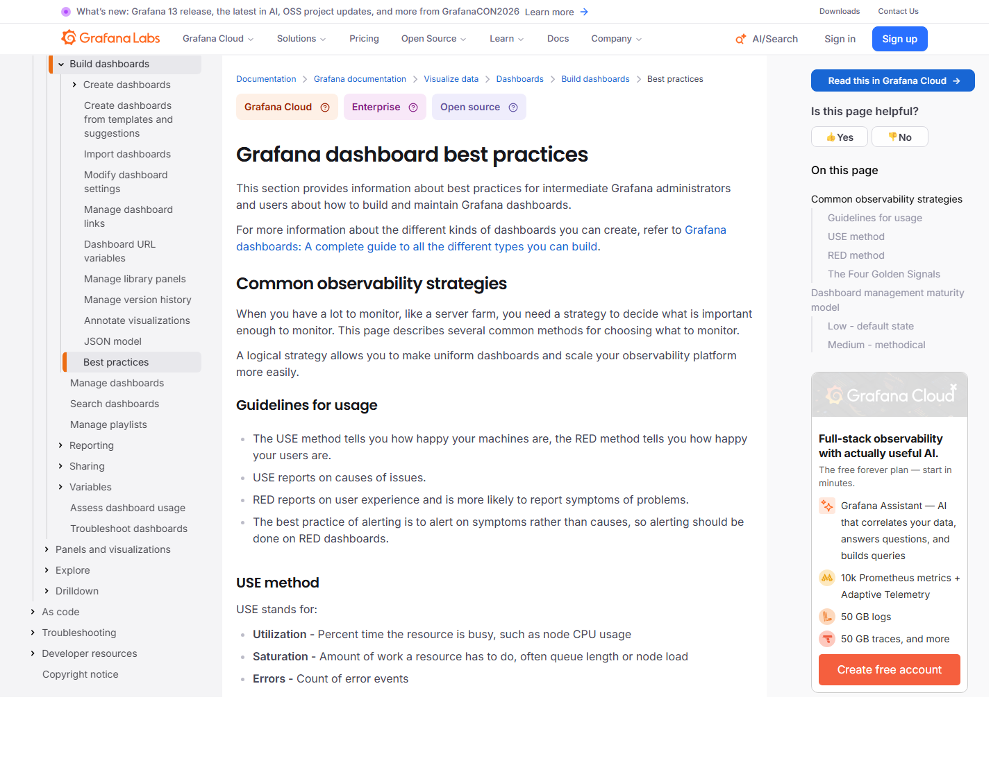
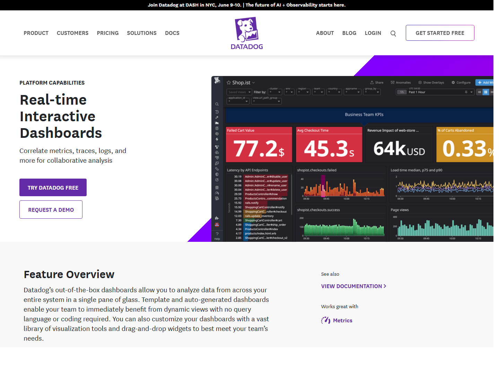
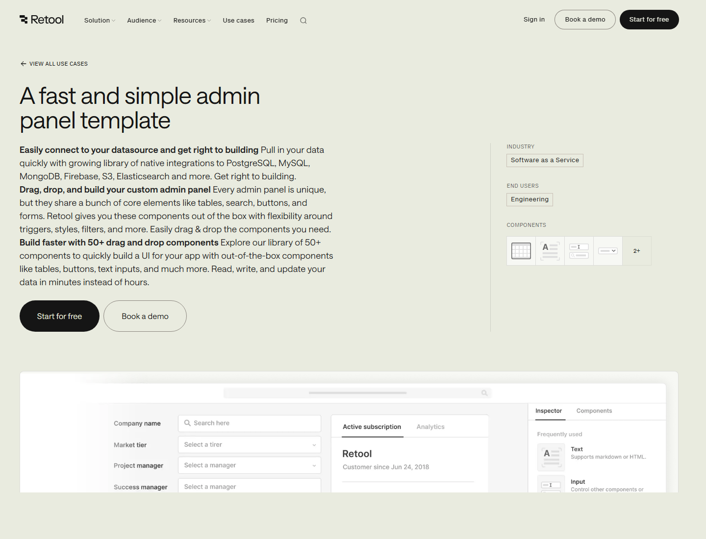
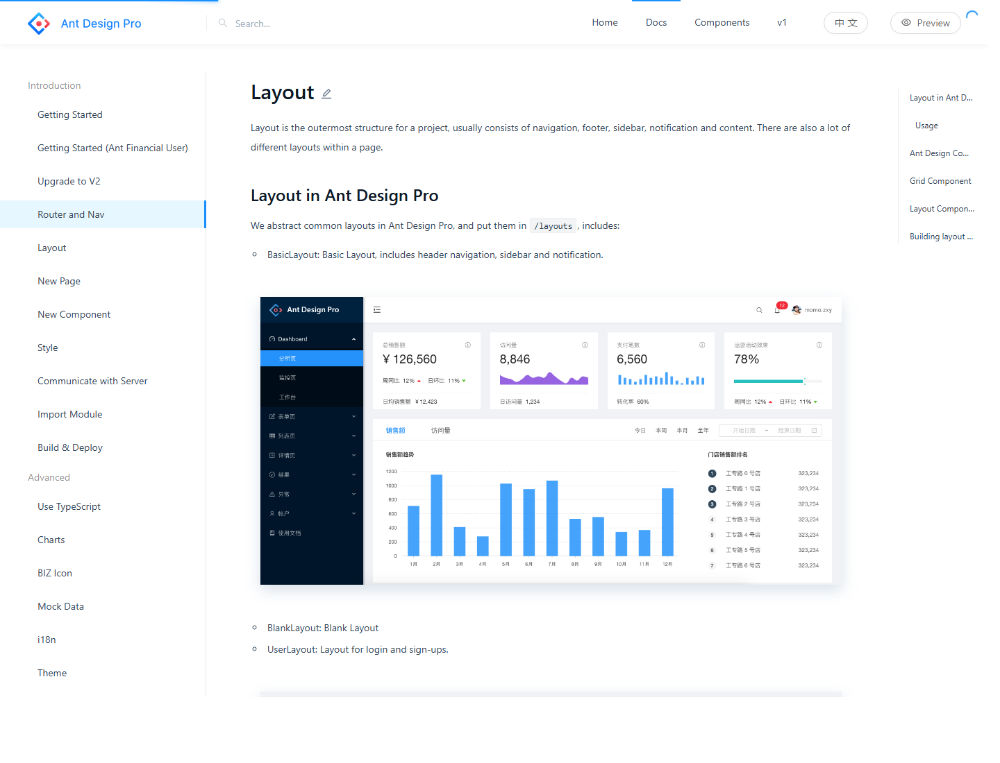

실시간 콜센터 관제에 최적화합니다. KPI, 경보, 콜 칸반, 큐/상담원 상태를 한 화면에서 스캔하게 합니다.
적합 화면: Dashboard, Live Calls, Monitoring
난이도: 낮음-중간
요약: 기본 추천은 시안 A: 운영상황실형 콘솔입니다. 현재 관리자 앱의 다크 톤, KPI 스트립, 콜 칸반, 경보 패널 구조를 유지하면서 정보 밀도와 상태 신호를 정리하는 방식이 가장 현실적입니다.
Lazyweb MCP 도구가 현재 세션에 노출되지 않아 공개 웹 레퍼런스 캡처와 현재 앱 구조 분석을 기준으로 작성했습니다.
용도: 대시보드, 실시간 콜, 모니터링. 핵심: 지금 어디가 막혔는지 5초 안에 보여야 합니다.
┌────────────────────────────────────────────────────────────────────┐ │ CTI Admin 지점: 전체 갱신 23:32:10 API OK AMI OK Redis OK │ ├───────────────┬────────────────────────────────────────────────────┤ │ 운영 메뉴 │ KPI strip: 대기 | 응답률 | 평균대기 | 포기 | 상담중 │ │ ├────────────────────────────────────────────────────┤ │ Dashboard │ 경보 3건 │ 실시간 콜 칸반: 대기/벨/통화/후처리/종료 │ │ Live Calls │ │ │ │ Monitoring ├──────────────┴────────────────────────────────────┤ │ Reports │ 큐 요약 테이블 │ 상담원 상태 │ 시간대 트래픽 │ └───────────────┴────────────────────────────────────────────────────┘
용도: 고객, 차단목록, 녹취, 리포트, 상담원/큐 설정. 핵심: 검색, 비교, 편집, 내보내기가 한 흐름 안에서 끝나야 합니다.
┌────────────────────────────────────────────────────────────────────┐ │ 고객 관리 [지점] [상태] [검색어] [가져오기] │ ├───────────────┬────────────────────────────────────────────────────┤ │ 업무 메뉴 │ Saved filters | 빠른 필터 칩 | 선택 12건: [차단] [SMS] │ │ ├────────────────────────────────────────────────────┤ │ Customers │ 고객명 │ 대표번호 │ 지점 │ 최근통화 │ 수신거부 │ 메모 │ │ Blocklist │ ... │ ... │ ... │ ... │ ... │ ... │ │ Recordings ├────────────────────────────────────────────────────┤ │ Reports │ 우측 drawer: 고객 상세, 통화 이력, 메모, 인라인 편집 │ └───────────────┴────────────────────────────────────────────────────┘
용도: 지점, 권한, PBX/IVR, 번호, 시스템 설정. 핵심: 어느 지점의 어떤 설정이 운영 반영 가능한 상태인지 보여야 합니다.
┌────────────────────────────────────────────────────────────────────┐ │ 설정 관리 지점: 강남 배포상태: 검증필요 [미리보기] [검증] [적용] │ ├───────────────┬────────────────────────────────────────────────────┤ │ 설정 메뉴 │ Branch summary: DID 12 | 큐 4 | 상담원 38 | 프롬프트 9 │ │ ├───────────────────────┬────────────────────────────┤ │ Branches │ 설정 섹션 목록 │ 선택 섹션 편집 폼 │ │ Prompts │ DID / IVR / Trunk │ 변경 전후 diff / preview │ │ Permissions │ Queue / Forwarding │ 검증 결과 / 운영 반영 로그 │ └───────────────┴───────────────────────┴────────────────────────────┘




| 선택지 | 추천 여부 | 가장 맞는 화면 | 구현 난이도 | 판단 |
|---|---|---|---|---|
| 시안 A 운영상황실형 | 1순위 | Dashboard, Live Calls, Monitoring | 낮음-중간 | 현재 구조를 살리면서 가장 큰 개선 효과 |
| 시안 B 데이터 워크벤치형 | 병행 적용 | Customers, Blocklist, Reports, Recordings | 중간 | CRUD/조회 화면 품질 개선에 필수 |
| 시안 C 지점 운영 포털형 | 단계 적용 | Branches, Permissions, Asterisk, System | 중간-높음 | 설정 규모가 커질수록 필요 |
A를 전체 시각 언어의 기준으로 삼고, B와 C를 화면 성격별 패턴으로 섞는 하이브리드가 가장 적합합니다.